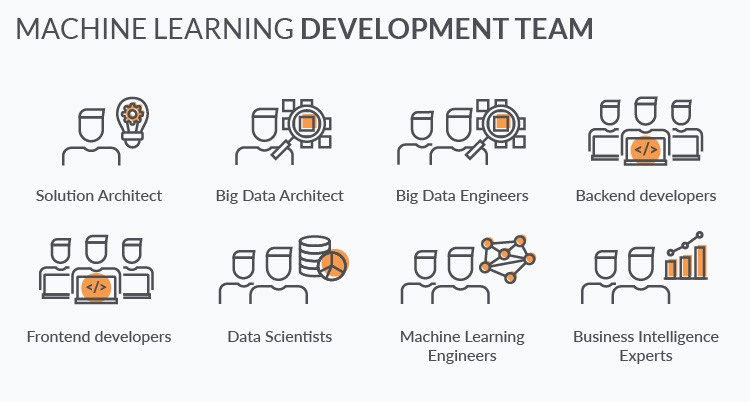

Just 30 years ago, you would have to wait days for a bank to approve your credit. Or spend weeks bogged down by your insurance company’s bureaucracy just to get a refund after a minor car accident. Today, these operations take less than a day as documents are submitted and processed online with little or no human interaction.
We can define machine learning (ML) as a subset of data sciencethat uses statistical models to draw insights and make predictions.The magic about machine learning solutions is that they learn from experience without being explicitly programmed. To put it simply, you need to select the models and feed them with data. The model then automatically adjusts its parameters to improve outcomes.
Data scientists train machine learning models with existing datasets and then apply well-trained models to real-life situations.The model runs as a background process and provides results automatically based on how it was trained. Data scientists can retrain models as frequently as required to keep them up-to-date and effective.
In general, the more data you feed, the more accurate are the results. Coincidentally, enormous datasets are very common in the financial services industry. There are petabytes of data on transactions, customers, bills, money transfers, and so on. That is a perfect fit for machine learning.
Despite the challenges, many financial companies already take advantage of this technology. The figure below shows that financial services’ execs take machine learning very seriously, and they do it for a bunch of good reasons:
1.Reduced operational costs thanks to process automation.
2.Increased revenues thanks to better productivity and enhanced user experiences
3.Better compliance and reinforced security.
There is a wide range of open-source machine learning algorithms and tools that fit greatly with financial data. Additionally, established financial services companies have substantial funds that they can afford to spend on state-of-the-art computing hardware.Thanks to the quantitative nature of the financial domain and large volumes of historical data, machine learning is poised to enhance many aspects of the financial ecosystem.
Let’s take a look at some promising machine learning applications in finance.
Process automation is one of the most common applications of machine learning in finance. The technology allows to replace manual work, automate repetitive tasks, and increase productivity.
As a result, machine learning enables companies to optimize costs, improve customer experiences, and scale up services. Here are automation use cases of machine learning in finance:
1.Chatbots
2.Call center automation
3.Paper work automation
4.Gamification of employee training
Below are some examples of process automation in banking:
JPMorgan Chase launched a Contract Intelligence (COiN) platform that leverages Natural Language Processing, one of the machine learning techniques. The solution processes legal documents and extracts essential data from them. Manual review of 12,000 annual commercial credit agreements would typically take up around 360,000 labor hours. Whereas, machine learning allows to review the same number of contracts in a just a few hours
BNY Mello integrated process automation into their banking ecosystem. This innovation is responsible for $300,000 in annual savings and has brought about a wide range of operational improvements.
Machine learning algorithms fit perfectly with the underwriting tasks that are so common in finance and insurance.
Data scientists train models on thousands of customer profiles with hundreds of data entries for each customer. A well-trained system can then perform the same underwriting and credit-scoring tasks in the real-life environments. Such scoring engines help human employees work much faster and more accurately.
Banks and insurance companies have a large number of historical consumer data, so they can use these entries to train machine learning models. Alternatively, they can leverage datasets generated by large telecom or utility companies.
In algorithmic trading, machine learning helps to make better trading decisions. A mathematical model monitors the news and trade results in real-time and detects patterns that can force stock prices to go up or down. It can then act proactively to sell, hold, or buy stocks according to its predictions.
Machine learning algorithms can analyze thousands of data sources simultaneously, something that human traders cannot possibly achieve.
Machine learning algorithms help human traders squeeze a slim advantage over the market average. And, given the vast volumes of trading operations, that small advantage often translates into significant profits.
Developing a machine learning solution from scratch is one of the riskiest, most costly and time-consuming options. Still, this may be the only way to apply ML technology to some business cases.
Machine learning research and development targets a unique need in a particular niche, and it calls for an in-depth investigation. If there are no ready-to-use solutions that were developed to solve those specific problems, third-party machine learning software is likely to produce inaccurate results.
Still, you will probably need to rely heavily on the open source machine learning libraries from Google and the likes. Current machine learning projects are mostly about applying existing state-of-the-art libraries to a particular domain and use case.
1.Financial incumbents most frequently use machine learning for process automation and security.
2.Before collecting the data, you need to have a clear view of the results you expect from data science. There is a need to set viable KPIs and make realistic estimates before the project’s start.
3.Many financial services companies need data engineering, statistics, and data visualization over data science and machine learning.
4.The bigger and cleaner a training dataset is, the more accurate results a machine learning solution produces.
5.You can retrain your models as frequently as you need without stopping machine learning algorithms.
6.There is no universal machine learning solution to apply to different business cases
7.Tech giants like Google create machine learning solutions. If your project concerns such use cases, you cannot expect to outperform algorithms from Google, Amazon, or IBM.